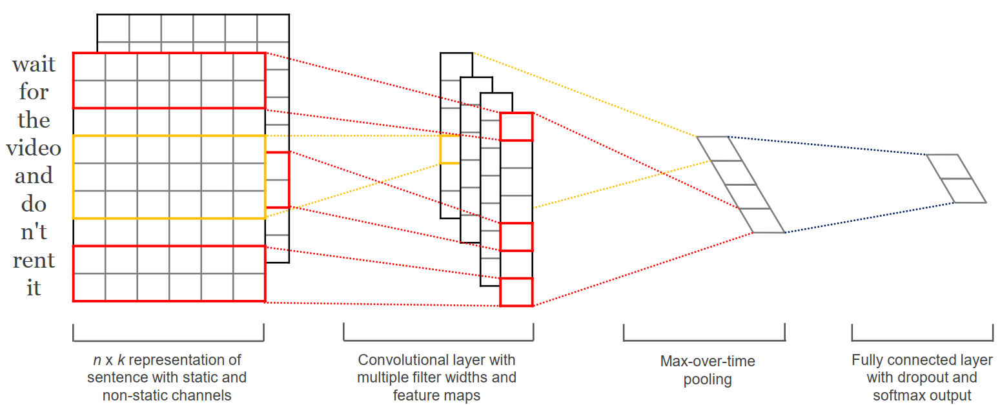

之前上课看到的一篇老论文，来自2014年EMNLP。简要总结一下论文的核心内容与思想。
先前的很多模型使用循环神经网络（Recurrent Neural Network）在预料库上学习词向量（Word Vector），并且可以用于文本分类的任务。该论文则采用了卷积神经网络（Convolutional Neural Network）去实现文本分类模型，并且在指标上达到了很好的效果。
如下图所示，通过一个尺寸为的矩阵来表示一个句子。其中是句子中词的数量，是表示词的维词向量。而卷积核是尺寸为的矩阵，也就是说卷积核的长度与词向量维度的保持一致，而宽度则定义了卷积核作用的窗口大小。图中的红色和黄色线条表示了卷积核在词向量上的滑动卷积过程，通过不同的卷积核的到不同的特征图。之后再对所得到的特征图进行Max-over-time池化，也就是选取所有时间步中的最大值来作为特征。最后经过池化得到的特征图通过一个采用Dropout和softmax的全连接层输出结果。
